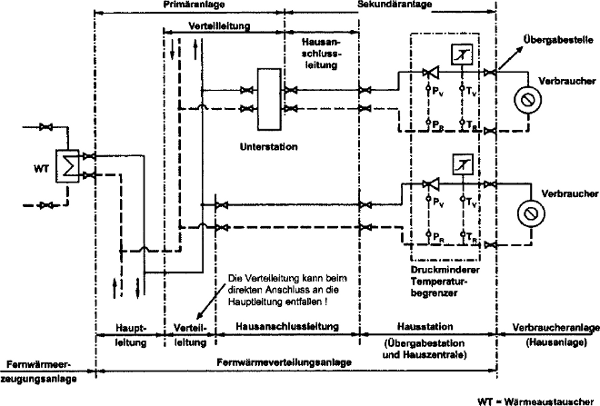
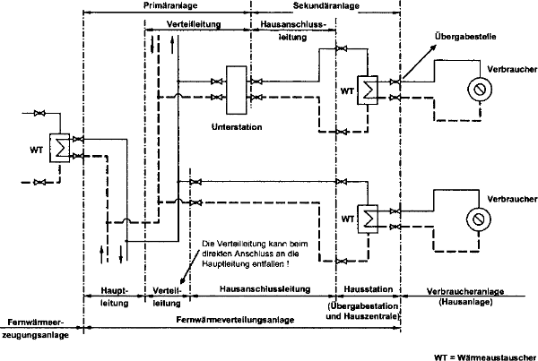

Diese Regel findet Anwendung auf das Betreiben von Anlagen, die zum Transport, zur Übertragung und Speicherung der Wärmeträger Heizwasser oder Dampf in Fernwärmeverteilungsanlagen verwendet werden.
Die Übergabestelle zur Verbraucheranlage ist beim direkten Anschluss zum Verbraucher die erste Absperrarmatur hinter dem Druckminderer oder dem Temperaturbegrenzer im Kreislauf der Verbraucheranlage.
Die Übergabestelle zur Verbraucheranlage ist beim indirekten Anschluss zum Verbraucher die erste Absperrarmatur hinter der Wärmeübertragung zum Verbraucher im Kreislauf der Verbraucheranlage.
Fernwärmeverteilungsanlagen können aus der Hauptleitung, Verteilleitung, Hausanschlussleitung und Hausstation bestehen.
Die Hausstation setzt sich aus der Übergabestation und der Hauszentrale zusammen. Fernwärmeverteilungsanlagen können hinter einer Unterstation aus weiteren einzelnen oder mehreren zwischenliegenden Kreisläufen bestehen. Diese so genannte Sekundäranlage unterliegt ebenfalls dem Anwendungsbereich dieser Regel.
Unter Kreislauf ist der jeweilige Vor- und Rücklauf zu verstehen.
Die Wärmeübertragung der Fernwärmeerzeugungsanlage an die Fernwärmeverteilungsanlage erfolgt in der Regel über einen Wärmeübertrager. Sie ist auch direkt über den Kondensator eines Wärmeheizkraftwerkes möglich.
Die erste Absperrarmatur hinter der Wärmeübertragung der Fernwärmeerzeugungsanlage im Kreislauf der Hauptleitung zählt zur Fernwärmeerzeugungsanlage.
An der Übergabestelle von der Fernwärmeverteilungsanlage zur Verbraucheranlage wird die Gefährdung hinsichtlich Druck und Temperatur des Heizmediums eingeschränkt.
Die Verbraucheranlage ist in der Regel die Hausanlage oder auch Heizungsanlage des Verbrauchers bzw. Abnehmers oder Kunden. Sie kann auch zur Übergabe von Prozesswärme dienen.
Beim direkten Anschluss zum Verbraucher sind die unterschiedlichsten Steuer- oder Regelungseinrichtungen zur Druck- oder Temperaturbegrenzung möglich. Druckminderer oder Temperaturbegrenzer stellen beispielhaft Möglichkeiten dar; siehe auch DIN 4747-1 "Fernwärmeanlagen; Teil 1: Sicherheitstechnische Ausrüstung von Unterstationen, Hausstationen und Hausanlagen zum Anschluss an Heizwasser; Fernwärmenetze". Die Steuer- oder Regelungseinrichtungen zur Druck- oder Temperaturbegrenzung sind Bestandteil der Hausstation.
Die Wärmeübertragung zum Verbraucher erfolgt beim indirekten Anschluss über einen Wärmeübertrager als Bestandteil der Hausstation. Die Fernwärmeverteilungsanlage umfasst die erste Absperrarmatur hinter dem Druckminderer oder dem Temperaturbegrenzer beim direkten Anschluss bzw. die erste Absperrarmatur hinter dem Wärmeübertrager beim indirekten Anschluss.Diese Regel findet keine Anwendung für Verbraucheranlagen.

Bild 1: Schematische Darstellung einer Fernwärmeverteilungsanlage für den direkten Anschluss nach DIN 4747-1

Bild 2: Schematische Darstellung einer Fernwärmeverteilungsanlage für den indirekten Anschluss nach DIN 4747-1